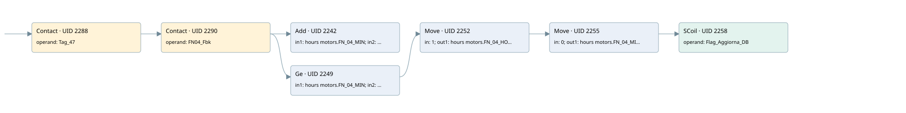

fn-04
time work motor · 검색 색인 순서 38 · 원본 내부 NID 추정 41
백업 PLF 원본의 2891254 바이트 위치에서 복원한 XML. 검색 문서 1039의 객체 키 161022004612000000000000와 연결했다. 이름 해석 12/12개. 남은 RefId는 상수 또는 미해석 참조다.
연결 구조 다시 그리기
원본 Part/PCon/Wire를 이용한 연결도다. TIA 화면의 래더 배치 또는 실행 결과를 재현한 그림은 아니다. 핀 연결은 아래 표와 원본 XML을 기준으로 읽는다. 노드 위에 마우스를 두면 피연산자 이름을 볼 수 있다.

접점·코일·블록과 피연산자
| Part UID | Gate | Negated 핀 | 연결 피연산자 |
|---|---|---|---|
| 2288 | Contact | operand = Tag_47 | |
| 2290 | Contact | operand = FN04_Fbk | |
| 2242 | Add | in1 = hours motors.FN_04_MIN; in2 = 1; out = hours motors.FN_04_MIN | |
| 2249 | Ge | in1 = hours motors.FN_04_MIN; in2 = 60 | |
| 2252 | Move | in = 1; out1 = hours motors.FN_04_HOUR | |
| 2255 | Move | in = 0; out1 = hours motors.FN_04_MIN | |
| 2258 | SCoil | operand = Flag_Aggiorna_DB |
접점 경로를 펼친 조건식
Contact·O/A·비교기의 원본 연결을 읽기 쉽게 펼친 보조 해석이다. POWER는 전원 레일 시작을 뜻한다. 호출 블록·에지·타이머의 내부 동작과 다중 쓰기 순서는 이 표로 실행 검증하지 않았다. 미해석 핀과 RefId는 원문 연결표에서 확인한다.
| UID | 동작 | 대상 | 원본 접점 경로 | 내용 |
|---|---|---|---|---|
| 2252 | Move | hours motors.FN_04_HOUR | ((Tag_47 AND FN04_Fbk) AND [hours motors.FN_04_MIN >= 60]) | Move 입력 1 |
| 2255 | Move | hours motors.FN_04_MIN | Move UID 2252.eno (블록 동작 확인) | Move 입력 0 |
| 2258 | SCoil | Flag_Aggiorna_DB | Move UID 2255.eno (블록 동작 확인) | 조건 성립 시 Set |
원본 배선 연결
| Wire UID | 동일 Wire 연결 끝점 |
|---|---|
| 2292 | Powerrail {} ↔ Part 2288.in |
| 2271 | ORef 2259 (Tag_47) ↔ Part 2288.operand |
| 2289 | Part 2288.out ↔ Part 2290.in |
| 2272 | ORef 2260 (FN04_Fbk) ↔ Part 2290.operand |
| 2291 | Part 2290.out ↔ Part 2242.en ↔ Part 2249.pre |
| 2273 | ORef 2261 (hours motors.FN_04_MIN) ↔ Part 2242.in1 |
| 2274 | ORef 2262 (1) ↔ Part 2242.in2 |
| 2275 | Part 2242.out ↔ ORef 2263 (hours motors.FN_04_MIN) |
| 2276 | ORef 2264 (hours motors.FN_04_MIN) ↔ Part 2249.in1 |
| 2277 | ORef 2265 (60) ↔ Part 2249.in2 |
| 2278 | Part 2249.out ↔ Part 2252.en |
| 2280 | ORef 2266 (1) ↔ Part 2252.in |
| 2282 | Part 2252.eno ↔ Part 2255.en |
| 2281 | Part 2252.out1 ↔ ORef 2267 (hours motors.FN_04_HOUR) |
| 2283 | ORef 2268 (0) ↔ Part 2255.in |
| 2285 | Part 2255.eno ↔ Part 2258.in |
| 2284 | Part 2255.out1 ↔ ORef 2269 (hours motors.FN_04_MIN) |
| 2286 | ORef 2270 (Flag_Aggiorna_DB) ↔ Part 2258.operand |
식별자 해석 근거 12개
| ORef UID | RefId | 이름 | IdentXmlPart 파일 | 해석 방법 |
|---|---|---|---|---|
| 2259 | 1 | Tag_47 | 0613-IdentXmlPart.xml | UID/RID + search-text + NID agreement |
| 2260 | 336 | FN04_Fbk | 0613-IdentXmlPart.xml | UID/RID + search-text + NID agreement |
| 2261 | 250 | hours motors.FN_04_MIN | 0615-IdentXmlPart.xml | UID/RID + search-text + NID agreement |
| 2262 | 7 | 1 | 0616-IdentXmlPart.xml | literal candidate: UID/RID/NID + nearby named declarations + search-text agreement |
| 2263 | 250 | hours motors.FN_04_MIN | 0615-IdentXmlPart.xml | UID/RID + search-text + NID agreement |
| 2264 | 250 | hours motors.FN_04_MIN | 0615-IdentXmlPart.xml | UID/RID + search-text + NID agreement |
| 2265 | 8 | 60 | 0616-IdentXmlPart.xml | literal candidate: UID/RID/NID + nearby named declarations + search-text agreement |
| 2266 | 7 | 1 | 0616-IdentXmlPart.xml | literal candidate: UID/RID/NID + nearby named declarations + search-text agreement |
| 2267 | 252 | hours motors.FN_04_HOUR | 0615-IdentXmlPart.xml | UID/RID + search-text + NID agreement |
| 2268 | 12 | 0 | 0616-IdentXmlPart.xml | literal candidate: UID/RID/NID + nearby named declarations + search-text agreement |
| 2269 | 250 | hours motors.FN_04_MIN | 0615-IdentXmlPart.xml | UID/RID + search-text + NID agreement |
| 2270 | 13 | Flag_Aggiorna_DB | 0613-IdentXmlPart.xml | UID/RID + search-text + NID agreement |
검색 코드 보조 자료
참조 명칭을 찾기 위한 자료이며 실행 순서나 AND/OR 관계는 위 연결표로 확인한다.
"tag_47" "fn04_fbk" add "hours motors".fn_04_min 1 "hours motors".fn_04_min 60 move 1 move 0 "flag_aggiorna_db" "hours motors".fn_04_hour "hours motors".fn_04_min "hours motors".fn_04_min